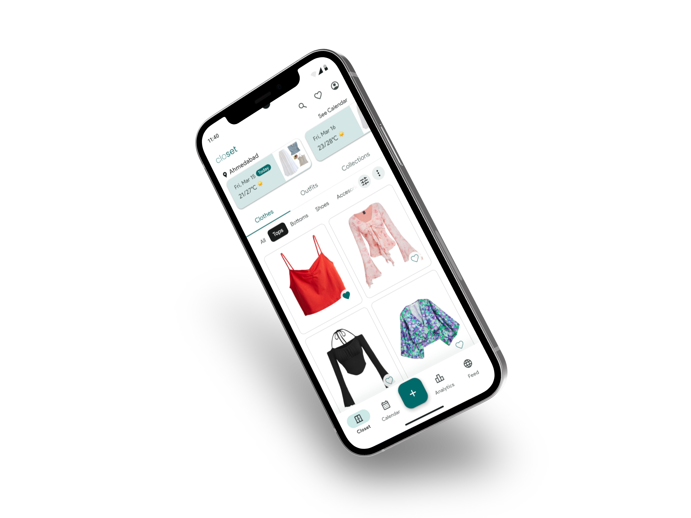

Belong Here
A relocation support platform helping newcomers navigate unfamiliar systems, make informed decisions, and build a sense of belonging in a new place.
View case study
Research Interviews
12+
Core Features
4
Closet
A wardrobe management app that helps users digitally catalogue their clothing, plan outfits, and make smarter dressing decisions — reducing decision fatigue and clothing waste.
View case study
Type
App Design
Timeline
4 Weeks